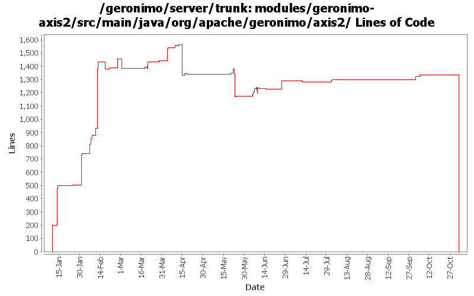

[root]/modules/geronimo-axis2/src/main/java/org/apache/geronimo/axis2
 client
(0 files, 0 lines)
client
(0 files, 0 lines)
 ejb
(0 files, 0 lines)
ejb
(0 files, 0 lines)
 pojo
(0 files, 0 lines)
pojo
(0 files, 0 lines)
 util
(0 files, 0 lines)
util
(0 files, 0 lines)

| Author | Changes | Lines of Code | Lines per Change |
|---|---|---|---|
| Totals | 146 (100.0%) | 4632 (100.0%) | 31.7 |
| dims | 75 (51.4%) | 3409 (73.6%) | 45.4 |
| gawor | 46 (31.5%) | 685 (14.8%) | 14.8 |
| jlaskowski | 1 (0.7%) | 358 (7.7%) | 358.0 |
| jdillon | 5 (3.4%) | 84 (1.8%) | 16.8 |
| linsun | 2 (1.4%) | 68 (1.5%) | 34.0 |
| dwoods | 1 (0.7%) | 13 (0.3%) | 13.0 |
| jbohn | 1 (0.7%) | 10 (0.2%) | 10.0 |
| djencks | 1 (0.7%) | 3 (0.1%) | 3.0 |
| kevan | 1 (0.7%) | 2 (0.0%) | 2.0 |
| prasad | 13 (8.9%) | 0 (0.0%) | 0.0 |
GERONIMO-3565. Modules distributed amongst framework/modules and plugins
0 lines of code changed in 13 files:
got ridd of initContextRoot() method that wasn't thread safe (GERONIMO-3495)
20 lines of code changed in 1 file:
better handling of HTTP GET for JAX-WS web services (GERONIMO-3494)
22 lines of code changed in 2 files:
fix minor bugs discovered by FindBugs
1 lines of code changed in 1 file:
use the annotation Holder object for injections for POJO web services
3 lines of code changed in 1 file:
fixes the ClientConfigurationFactory registration problem described in GERONIMO-3368
4 lines of code changed in 1 file:
fixes for GERONIMO-3196
16 lines of code changed in 1 file:
collect SOAPHandler headers and register then
2 lines of code changed in 1 file:
build AxisService in more sane way
26 lines of code changed in 1 file:
use our config file
1 lines of code changed in 1 file:
pass transport headers correctly
6 lines of code changed in 1 file:
fix build error (new api in axis2)
10 lines of code changed in 1 file:
updated handler processing
65 lines of code changed in 2 files:
a few more updates
2 lines of code changed in 1 file:
install our own HandlerLifecycleManager
13 lines of code changed in 3 files:
make it work with latest Axis
1 lines of code changed in 1 file:
enable some handler code with new axis2 snapshot
1 lines of code changed in 1 file:
disabled to prevent build errors for now
3 lines of code changed in 1 file:
reworked handler processing
104 lines of code changed in 3 files:
keeping things in synch
6 lines of code changed in 1 file:
cleaned up the code a bit more
15 lines of code changed in 1 file:
getting service injection working right plus a bunch of other improvements
66 lines of code changed in 4 files:
initalize things in the same way if built from class or wsdl
20 lines of code changed in 1 file:
added generateServiceFromClass method (right now disabled as it generated NPE when get wsdl is called (bug in axis2))
40 lines of code changed in 3 files:
initialize AxisService with the right wsdl service and port
32 lines of code changed in 2 files:
resolve wsdl and schema files in jar files properly
16 lines of code changed in 1 file:
initial ws support for ejb-based endpoints for axis2
54 lines of code changed in 2 files:
handle multiple imports of the same wsdl/xsd
8 lines of code changed in 1 file:
publish xsd/wsdl files appropriately. borrowed some code from cxf
39 lines of code changed in 3 files:
cleaned up the code a bit and made invocations work again
79 lines of code changed in 1 file:
Fix for Geronimo 3164 - Axis2: support bindingtype overwrite from wsdl to annotation
42 lines of code changed in 1 file:
GERONIMO-3176 ArrayIndexOutOfBound happens for WebServices. Also added a couple debug log calls. Lasantha, thanks for the patch.
13 lines of code changed in 1 file:
organize imports on this file - also test if my commit authority works:)
26 lines of code changed in 1 file:
oops! thanks jdillon
1 lines of code changed in 1 file:
log error first, then try to send the fault back (and don't print fault on output stream when you are trying to send back the fault)
2 lines of code changed in 1 file:
remove print stack trace
1 lines of code changed in 1 file:
Fix for GERONIMO-3102 - Axis2: servicename and portname overwrite (from wsdl to annotation)
14 lines of code changed in 1 file:
- trying to fix GERONIMO-3097 by eliminating unnecessary code.
- We don't need wsdl20 support, also avoids saving the wsdl into a byte array (which in turn helps with problems loading schemas relative to wsdl)
32 lines of code changed in 2 files:
Avoid java.lang.ArrayIndexOutOfBoundsException
1 lines of code changed in 1 file:
Fix for GERONIMO-2998 - Geronimo Axis2 Adding Fault Handling for WSDL Provided
8 lines of code changed in 1 file:
(40 more)